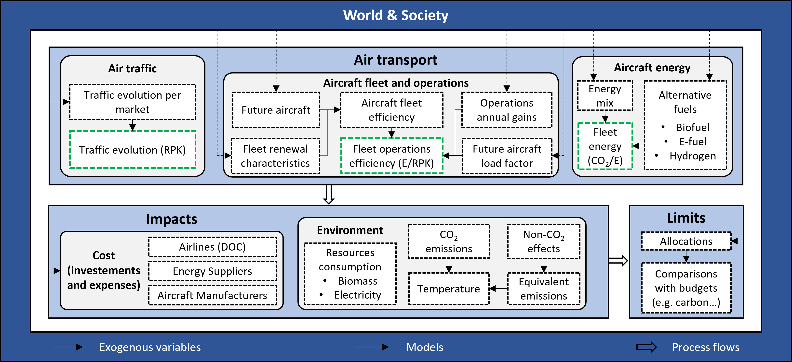

Air transport modeling#
Air traffic#
The parameter that corresponds to the evolution of air traffic is the RPK. The modeling of this lever is based on the study of worldwide historical data. The models presented in this section can be applied to the fleet as a whole or to aircraft categories.
Fig.1 represents historical values since 1991 as well as a trend model that was performed. The latter was obtained using an exponential function with a fixed growth rate. The model is given in equation with \(RPK_{1991}\) the value of RPK in 1991, \(x\) the year and \(\tau\) a smoothed growth rate. To determine \(\tau\), an optimization is performed using the SLSQP method to minimize the Root Mean Square (RMS) error between the historical data and the model. This makes it possible to smooth out the values due to various political crises (September 11, 2001 attacks in the United States, 2008 financial crisis). The growth rate obtained is 5.5% over the period 1991–2019, with an RMS error of 0.032. By restricting the study to the last ten years, the growth rate obtained is then 6.5%, which shows an acceleration of air traffic growth in recent years.
\(RPK(x) = RPK_{1991} ~ (1+\tau)^{x-1991}\)

This model is therefore relevant for modeling the evolution of air traffic. Therefore, the following model, indexed from 2019, is used to make projections on the evolution of air traffic. For more detailed scenarios, this model can be applied by decade using Compound annual growth rates (CAGR).
\( RPK(x) = RPK_{2019} ~(1+\tau)^{x-2019}\)
Nevertheless, the difficulty lies in estimating the future growth rate. Indeed, the latter could be impacted for different reasons. For example, due to the saturation of certain markets (e.g. Europe), the industry anticipates a decline in this growth rate in the future. Similarly, this rate could become much lower or even negative (which means a decrease in air traffic) due to crises and/or economic, political, environmental or health measures such as the Covid-19 epidemic.
Various industry and institutional projections are available. Before the Covid-19 epidemic, Airbus and Boeing respectively projected an annual growth of the total distance flown of 4.4% and 4.7% from 2017 [FFN20]. The ICAO projected air traffic growth of 4.1% per year between 2015 and 2045. However, the Covid-19 epidemic has led to a decline in these projections. ATAG now projects 3.1% annual growth in air passenger traffic between 2019 and 2050 in its median scenario [ATAGAirTAGroup21], while Airbus projects 3.6% for the period 2019-2041 [Airbus22]. Despite the Covid-19 health crisis, all the scenarios presented thus forecast a growth in air traffic in the coming decades.
The development of air traffic is modelled via the evolution of the number of passenger kilometer, also known as Revenue Passenger Kilometres (RPK). A fixed rate of change is chosen as a parameter. A positive rate implies traffic growth, while a negative rate implies a decline in traffic. This rate is expressed as a percentage (%).
Efficiency improvements#
Efficiency improvements are modelled via a gain in aircraft energy consumption per RPK. A fixed rate of change is chosen as a parameter. A positive rate implies a reduction in aircraft consumption per RPK. The negative case corresponding to a reduction in aircraft performance is not considered. This rate is expressed as a percentage (%). Fleet renewal is considered as regular and is therefore included in this rate. However, an additional specific option concerning renewal is detailed in another section. Possible over-consumption linked to a change of architecture for an alternative fuel is not taken into account at this stage.
Thus, noting \(E_{RPK}\) the energy consumed per RPK, \(k\) a given year and \(\tau\) the rate of technological improvement, efficiency is expressed as follows : \(E_{RPK{k+1}} = E_{RPK} (1-\tau)\)
Improvements in flight and ground operations#
Improvements in flight and ground operations concern several elements such as air routes, optimisation of flight paths according to atmospheric conditions or the use of energy on the ground. Here, they are modelled by a sigmoid function. A sigmoid function allows to represent an asymptotic convergence, more or less fast towards a plateau. It is well adapted to the modelling of operations since these are led to take up less and less space (decarbonised energy of airports, reduced flight operations…) with a negligible effect compared to the flight and production phases of aircraft. The model includes the following three parameters:
- Maximum projected level of improvement noted $Op_{final}$
- Speed of application noted $\alpha$
- Timing of implementation noted $t$
Thus, by noting \(Op\) a coefficient representing the evolution of operations and \(k\) the year under consideration, we obtain : \(Op_k = \frac{Op_{final}}{1+e^{-\alpha(k-t)}}\)
Aircraft load factor#
Aircraft load factor is the ratio of seats occupied to seats available, it can be expressed as a percentage (%). The evolution of this rate is modelled by a sigmoid function. This function is well suited to load factor that are limited to 100% or even a little less for logistical and structural reasons in air transport. The model includes the following three parameters:
- Maximum projected aircraft load factor noted $LF_{final}$
- Speed of application noted notée $\alpha$
- Timing of implementation noted $t$
Thus, by noting \(LF\) the aircraft load factor and \(k\) the year under consideration, we obtain : \(LF_k = \frac{LF_{final}}{1+e^{-\alpha(k-t)}}\)
Decarbonation of energy#
The decarbonation rate of energy is defined here as a percentage (%) in relation to kerosene. A 0% energy corresponds to an energy that emits as much \(CO_2\) per unit of energy as kerosene, a 50% energy to an energy that emits half as much \(CO_2\) per unit of energy as kerosene and a 100% energy to a totally carbon neutral energy (only theoretical case). The evolution of this rate is also modelled by a sigmoid function which is well adapted to this rate of decarbonation limited to 100% and even less since all energies are today carbonated because of the production phases. The model therefore includes the following three parameters:
- Maximum projected decarbonation level noted $\tau_{d_{final}}$
- Speed of application noted $\alpha$
- Timing of implementation noted $t$
Thus, by noting \(\tau_d\) the decarbonation rate of the energy used and \(k\) the year considered, we obtain : \(\tau_{d_k} = \frac{\tau_{d_{final}}}{1+e^{-\alpha(k-t)}}\)
Strategies against condensation trails#
Additional lever of action does not directly address aviation \(CO_2\) emissions, but addresses strategies to fight contrails. This lever of action is modelled assuming a reduction in contrails from 0% (no strategy) to 100% (strategy that removes all contrails; currently a theoretical case). Some strategies may result in a slight over-consumption of fuel, which is reflected in a coefficient to the energy consumption per RPK. For example, a strategy can be represented by a 50% reduction in contrails (half as many as appearing) at the cost of an overall increase in consumption of 0.1% (averaged for the entire fleet and flights). This modelling is also carried out using sigmoid functions as for other levers of action.
Modelling of additional options for aviation#
In addition to the different levers of action, additional options are implemented in order to test various more specific effects. A description of these is given below.
Carbon offsetting#
Carbon offsetting is one of the solutions being considered by the aviation sector, particularly in the context of CORSIA. It is a question of offsetting part of the \(CO_2\) emissions by actions that allow to store \(CO_2\) (tree plantations…) or to install low-carbon infrastructures. One option allows offsetting emissions above the 2019 level, in the same way as CORSIA. This option shows the interest of offsetting emissions in the short term, the time it takes to implement breakthrough architectures. It is important to note that carbon offsetting does not prevent \(CO_2\) emissions and that a framework must be put in place to ensure that emissions are properly offset. Further details on carbon offsetting are available on this document detailing the project Net Zero Initiative of Carbone 4.
Total replacement of the fleet#
This option makes it possible to take into account a total replacement of the aircraft fleet every 10 years. This leads to sharp falls in consumption per RPK every 10 years (linked to the rate of technological improvement, which is reduced to the equivalent rate over 10 years) and stagnation for 10 years thereafter. Without this option, renewal is ensured on a regular basis via the annual rate of technological improvement. A complete and rapid renewal of the fleet enables the cumulative \(CO_2\) emissions to be lowered. The effect of rapidly bringing these aircraft to end of life has not been considered at the life cycle level, but the production and end-of-life phases are negligible in terms of \(CO_2\) emissions, for example via the results of Johanning et al. in 2013 in A first step towards the integration of life cycle assessment into conceptual aircraft design or of Melo et al. in 2020 in Sustainability Assessment and Engineering of Emerging Aircraft Technologies — Challenges, Methods and Tools. This option is unrealistic in terms of aircraft production rates, but makes it possible to measure the impact of fleet renewal.
Cancellation of substitutable flights#
Today, the plane is in competition with the train on certain routes. This option makes it possible to substitute a share of air traffic with rail traffic at a global level. The carbon impact of trains replacing aircraft has not been taken into account in the balance sheet. The reduction is set here at 10% of global flights in 2030.
Improvement of the other phases of the life cycle#
In addition to direct emissions (fuel combustion) and indirect emissions from fuel production, the other phases of the life cycle are also responsible for around 2% of the \(CO_2\) emissions (using the work of Melo et al. in 2020 in Sustainability Assessment and Engineering of Emerging Aircraft Technologies — Challenges, Methods and Tools). One option makes it possible to halve the \(CO_2\) emissions due to the extraction of raw materials, the production of aircraft, the end of life of aircraft and aeronautical infrastructures (production plants, airports). The technical means to decarbonise these life cycle phases are, for example, better aircraft recycling, the use of decarbonised energy in airports or better supply chain management for aircraft production. Nevertheless, the effects of these efforts remain small compared to direct emissions and fuel production.
Societal aspects on the distribution of flights#
The results of this part are based on the work of S. Gössling and A. Humpe in 2020 in The global scale, distribution and growth of aviation: Implications for climate change. The authors show that only 11% of the world’s population flies, and only between 2 and 4% go abroad. Moreover, ‘frequent flyers’, about 1% of the world’s population who fly an average of 56,000 km per year (about 3 long-range trips), are responsible for about 50% of aviation \(CO_2\) emissions, taking into account their number of flights but also the more frequent use of upper classes. Therefore, if on average these ‘frequent flyers’ flew half as often, aviation emissions would be reduced by 25%.
Covid-19#
The global Covid-19 outbreak has significantly disrupted global air traffic in 2020. The consequences of the latter are likely to disrupt global traffic for several years. To take account of this epidemic, this option incorporates a 66% decline in traffic in 2020 compared with 2019 and a return to the 2019 level by 2024 according to IATA. This option also takes into account the one-off change in the aircraft load factor in 2020, which has dropped to 58.5% according to IATA, against 82.4% in 2019. Thus, due to this deterioration in the aircraft load factor, a paradoxical situation is present on the tool. Indeed, the deterioration in the aircraft load factor, considered as a potential improvement in efficiency, leads here to an increase in emissions compared to those expected without modification of the efficiency levers of action.